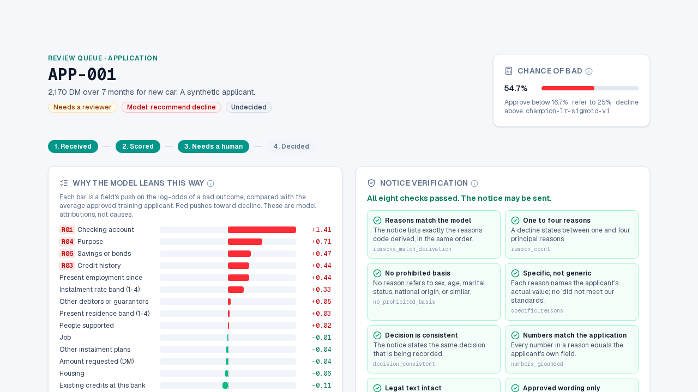

Credit Decisioning — Verified Adverse-Action Notices

When a lender declines credit, the applicant must be told the specific reasons. This project makes those reasons checkable. A calibrated model scores the application, code, not AI, applies the policy and writes the notice from a reviewed template, and a separate verifier checks every notice before a human decides.
Scope note: a portfolio demonstration on the 1994 UCI German Credit benchmark (1,000 applicants, CC BY 4.0); the review queue holds 60 synthetic applicants derived from it. It is not a lender and is not legal or compliance advice.
Why This Project Exists
In the United States, ECOA and Regulation B require a written notice with the principal reasons for a decline. "Insufficient score" is explicitly not enough, and the CFPB has said the duty is the same when a complex model makes the decision. Two things go wrong in practice:
- Reasons drift from what the model used after a template edit, a mapping change or a reviewer rewording.
- Generated text adds things nobody checked — a wrong number, a promise, a prohibited basis such as age or sex.
The harm lands on the applicant, who cannot contest a reason they were never given, and on the lender, who carries the regulatory exposure. The project asks a practical question: how do you prove a regulated document is correct before it is sent?
How It Works
| Artifact | Produced by | Checked by |
|---|---|---|
| Probability of a bad outcome | Calibrated logistic regression | Repeated 5×5 cross-validation, bootstrap intervals, reliability curve |
| Approve / refer / decline band | Code, from the benchmark's cost matrix | Unit tests pin the threshold (derived, not tuned) |
| Principal reasons | Code, from the model's coefficients | Attributions must sum to the model's log-odds difference |
| Notice text | Code, from a reviewed template | Eight deterministic verifier checks |
| Analyst answers | An LLM agent (read-only) | Code checks every number against tool results |
A reviewer then sees the model's reasons, the verifier's results and the drafted notice, and records the decision. The model's recommendation is kept on record even when the human overrides it.
The Verifier Is Itself Verified
The verifier is an independent second implementation: it does not call the renderer. It checks that reasons match the derivation, that there are one to four of them, that none rests on a prohibited basis, that each states the applicant's actual value, that the decision is consistent, that every number matches the application, that the legal text matches a pinned hash, and that each sentence is an approved wording. To show these checks earn their place, a mutation suite applies 14 kinds of defect to every genuine notice and requires each defect to fail its intended check, and a meta-test switches each of the eight checks off in turn and requires the gate to notice.
Results and Honest Limits
All figures below come from one generated run (2026-10-29) on the benchmark's 1,000 applicants with out-of-fold predictions.
- Decision quality: expected cost of 0.541 per applicant (95% interval 0.488–0.598), against 0.70 for declining everyone. Because declining a good applicant costs 1 and approving a bad one costs 5, "decline everyone" beats "approve everyone", so that is the baseline the model has to beat. AUROC is 0.780 (0.751–0.810).
- Model choice: the boosted-tree challenger's advantage was +0.012 AUROC with an interval that includes zero, so the simpler, explainable model was kept.
- Verifier: every applicable mutant was caught across 1,006 genuine notices, none of the genuine notices were rejected, and all eight checks were detected when disabled.
- Fairness: protected attributes are excluded from the model, yet applicants under 25 are approved at 0.57 of the rate of the reference group, below the common 0.8 screen. Dropping a column does not remove its signal. Small groups are labelled "insufficient n" rather than given a number.
- Analyst agent: 19 of 19 scripted guard-rail cases pass. A separate live run on 15 questions behaved correctly on all 15 after fixes, with one answer flagged for a real transcription error — a smoke test, not a rate.
- Limits: the data is 1,000 German applicants from the 1970s–90s. Nothing here generalizes to a current lender.
A Lesson Worth Sharing
The first version let an LLM paraphrase each reason. Prose cannot be fully verified by code, so the notice became 100% template and the LLM moved to a read-only analyst, where its numbers can be checked. Moving the model out of the notice made the compliance claim stronger, not weaker. Evaluation also caught a real bug in the analyst's number-checking guard, which is now pinned by tests.
Engineering Decisions Worth Noting
- No LLM on the decision path, enforced by an import contract rather than by convention.
- Review workflow as a plain state machine with atomic claims (a double start or stale page returns a conflict) and a verified-hash binding before a notice can be sent.
- Reproducibility: pinned, hash-checked data, and a command that retrains from scratch and requires the evidence to match.
- Quality gates: lint, strict typing, import contracts, tests at 90% coverage or better, and an evaluation gate on every pull request.
Stack: Python, calibrated logistic regression, FastAPI with server-sent events, SQLite, LangChain agents, Next.js, and MkDocs.
Who This Is For
For lenders and fintech teams, it shows an approach to regulated, explainable decisions where every outbound document is independently verified. For AI and risk leaders, it is a worked example of using mutation testing to prove that your safety checks actually catch failures. If you are working on a similar problem, I would be glad to discuss it.
Technical Resources
Live App View Source Code Technical Documentation Discuss a Similar Project